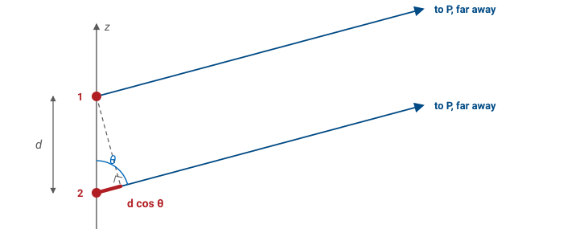
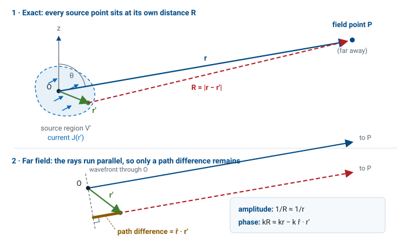
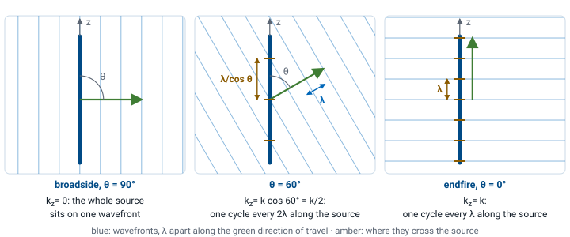
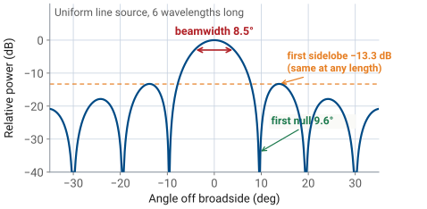
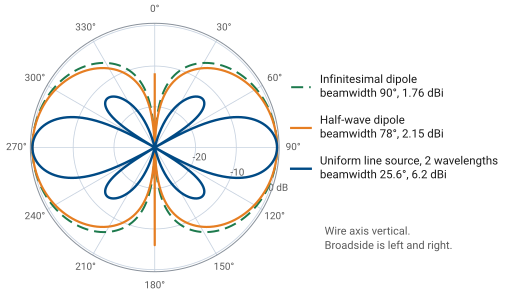

L6 - Radiation Integrals#
Radiation Integrals
Lesson 5 told you where the far field is. This lesson tells you what it is.
Lesson 6 · Antennas, Phased Arrays, and Radar Systems · Dr. Neil Rogers
Slides
Learning Objectives
- I can explain the radiation integral as the sum of the spherical waves launched by every current element on the antenna, and state the recipe that takes a current distribution to a far-field pattern.
- I can apply the far-field approximations to the exact integral — one for amplitude, a different one for phase — and show that the leftover phase error is exactly the far-field distance criterion from Lesson 5.
- I can set up and evaluate the radiation integral for a given current distribution, and turn the resulting radiation vector into the far-field pattern.
- I can recognize the current distribution and the far-field pattern as a Fourier transform pair, and predict how a change in the current changes the pattern.
Now we compute the pattern
The input is the current distribution on the antenna. The output is the far-field pattern. The machinery in between is a single integral, and every array in Module 3 is that integral with a different current in it.
Everything up to now has taken the radiation pattern as a given, something you measure or read off a datasheet. Now we compute it. That integral is the last piece of Module 1, and it is the piece that makes the rest of the course possible: steered, tapered, thinned, nulled, every array in Module 3 is this integral with a different current in it.
Start with two sources
Two current elements \(d\) apart, seen from far away in direction \(\theta\).
Parallel rays: element 2’s wave travels \(d\cos\theta\) farther, so it arrives \(kd\cos\theta\) radians late.
Add the phasors: in phase, a beam; half a cycle apart, a null.

This is the double-slit experiment with currents in place of slits. Nothing about the antenna enters except where the elements are and what phase each one carries; the direction \(\theta\) does the rest, through the path difference. Every antenna in this course, and every array in Module 3, is this picture with more elements.
The next frame shows those two sources radiating: the field around them, with the bright and dark directions their phase difference makes. Slide the element count up and the fringes of the double slit sharpen into the lobes of a line source. Drag \(P\) around the edge to move the observer.
Two sources, in space
Many sources: the radiation integral
A real antenna is a continuum of current elements. Each piece \(\mathbf{J}(\mathbf{r}')\ dV'\) launches its own spherical wave, and the field is their sum:
Radiation is superposition with phase bookkeeping.
Read the integrand, not the integral. The wave from each element arrives at the observation point with an amplitude set by \(1/R\) and a phase delay set by \(kR\), and the integral adds those contributions with the bookkeeping done in phase. A definite integral over something we can write down has replaced the unknown field. \(\mathbf{A}\) is the magnetic vector potential: the field follows from it by differentiation, and the next frame shows where the integral comes from.
Note
There is a second radiation integral. Antennas that radiate through an opening rather than off a wire — slots, horns, reflector feeds — are handled by replacing the aperture with an equivalent magnetic current \(\mathbf{M}\), which produces an electric vector potential \(\mathbf{F}\) through an integral of exactly the same form. Balanis writes the pair as \(\mathbf{N}\) (from \(\mathbf{J}\)) and \(\mathbf{L}\) (from \(\mathbf{M}\)). We will need \(\mathbf{L}\) in Module 2 for slots and horns; everything in this lesson carries over by duality.
Where the integral comes from
We want \(\mathbf{E}\) far away, given a known current density \(\mathbf{J}\) on the antenna. Attacking Maxwell’s equations directly is unpleasant: \(\mathbf{E}\) and \(\mathbf{H}\) are coupled, and the source enters through a curl. The standard move is to introduce an intermediate quantity that absorbs the source, solve for that, and differentiate at the end.
The opening is Gauss’s law for magnetism. Because
always, and because the divergence of any curl vanishes, you can always write \(\mathbf{B}\) as the curl of some vector field. Define the magnetic vector potential \(\mathbf{A}\) by
Substituting this into the remaining Maxwell equations and fixing the leftover freedom in \(\mathbf{A}\) with the Lorenz condition turns two coupled first-order equations into one vector Helmholtz equation with the current sitting on the right-hand side:
That equation has a known solution, and this is the whole reason for the detour: its solution is the radiation integral on the previous frame. Once \(\mathbf{A}\) is known, the fields follow by differentiation:
Only the first step involves the source. The last two are differentiation, and in the far field, as the next frames show, they collapse into multiplication.
r, me mateys
Symbol |
What it is |
|---|---|
\(\mathbf{r}\) |
origin to the field point \(P\) |
\(\mathbf{r}'\) |
origin to a source point, where a piece of current sits |
\(R = \vert\mathbf{r}-\mathbf{r}'\vert\) |
distance from that source point to \(P\) |
Primed means source. Unprimed means field point.
Two position vectors from one origin \(O\), and neither is a spherical coordinate. The prime is the whole convention: the integral sweeps \(\mathbf{r}'\) over the antenna while \(\mathbf{r}\) stays fixed at \(P\), and \(V'\) with its element \(dV'\) is the volume the current occupies.
The scalars are the lengths of these vectors. \(r = \vert\mathbf{r}\vert\) happens to be the spherical radial coordinate of \(P\), and \(\hat{\mathbf r} = \mathbf{r}/r\) is the unit vector from the origin toward \(P\), in the direction \((\theta,\phi)\). \(r' = \vert\mathbf{r}'\vert\) is simply how far a source point is from the origin; it has nothing to do with \(P\).
What a pattern is
A pattern is a function of direction only. The exact integral tangles distance and direction together inside \(R\), so it cannot give us a pattern until we pull the two apart. That is the whole job of the far-field approximation.
The exact integral is correct everywhere, near field included, but \(R = \vert\mathbf{r} - \mathbf{r}'\vert\) depends on where \(P\) is and on which source point you are looking at, and the two dependences do not separate. What we want is to write \(\mathbf{A}\) as a factor that depends only on the distance \(r\) times a factor that depends only on the direction \((\theta,\phi)\). Lesson 5 said the pattern stops changing with distance once you are far enough away; this is the same statement, seen from inside the integral.
Far field: the rays go parallel

Far away, the rays from every source point to \(P\) are parallel, so
the same distance for everyone, plus a path difference set by direction. That is the two-source picture again.
Start with the exact distance and expand it for \(r' \ll r\):
The linear term is the path difference: the projection of the source point’s position onto the viewing direction. The quadratic term is what we drop, and the next two frames say when that is safe. \(R\) appears in two places in the integral, and the two places get different treatment.
Amplitude versus phase
In the amplitude \(1/R\) it is a fraction of a percent, so \(1/R \approx 1/r\).
In the phase \(e^{-jkR}\) it is several radians. Keep it.
A 1 m antenna at 100 m, \(\lambda = 10\ \text{cm}\): \(1/R\) moves 1%, \(kR\) ten full cycles.
Amplitude. In the \(1/R\) factor, the correction \(\hat{\mathbf r}\cdot\mathbf{r}'\) is a fractional change of order \(r'/r\). At any useful distance that is a fraction of a percent, and nobody can measure it. So
Phase. In \(e^{-jkR}\) the same correction is multiplied by \(k\), and what matters is whether \(k\ \hat{\mathbf r}\cdot\mathbf{r}'\) is comparable to a radian. For a source a few wavelengths across it is several radians, and it flips contributions from adding to canceling. Dropping it would destroy the pattern. So we keep the linear term and only discard the quadratic one:
This is the entire content of “far field”: the rays from every part of the antenna to the observation point are parallel, so the only thing that distinguishes one source point from another is a path difference \(\hat{\mathbf r}\cdot\mathbf{r}'\), the projection of its position onto the viewing direction.
The term we threw away is L5’s boundary
The dropped quadratic term is a phase error of at most
Hold it under \(\pi/8\), the \(22.5^{\circ}\) budget from Lesson 5, and
Not a coincidence: the far-field distance is where the parallel-ray approximation becomes accurate.
The worst case of the quadratic term is \(r'_{\max}{}^2/2r\), and for an antenna of largest dimension \(D\) the source extends to \(r'_{\max} = D/2\), so the leftover phase error is at most
Demand that this stay under \(\pi/8\) radians and it rearranges to \(r \ge 2D^2/\lambda\). That is not a second criterion. Lesson 5 derived the same number from the geometry of a curved wavefront; here it falls out of the term we need to drop to make the integral tractable. Same number, same physics, arrived at from opposite directions.
The radiation vector
With both approximations in, the \(e^{-jkr}/r\) factor no longer depends on \(\mathbf{r}'\) and comes out of the integral:
Distance out front, the same for every antenna ever built. Direction inside \(\mathbf{N}\), everything that makes this antenna different.
The integral that is left is the radiation vector \(\mathbf{N}(\theta,\phi)\), and this split is the payoff of the whole lesson:
Factor |
Depends on |
What it carries |
|---|---|---|
\(e^{-jkr}/r\) |
distance only |
the outgoing spherical wave — identical for every antenna ever built |
\(\mathbf{N}(\theta,\phi)\) |
direction only |
everything that makes this antenna different from any other |
An antenna’s pattern, its polarization, its directivity, its sidelobes — all of it lives in \(\mathbf{N}\), and \(\mathbf{N}\) is a single integral over the currents. Note also what became of the recipe’s second and third steps: with the \(\mathbf{r}\)-dependence reduced to \(e^{-jkr}/r\), taking a curl in the far field just multiplies by \(-jk\hat{\mathbf r}\). Differentiation has collapsed into multiplication.
From N to the pattern
Only the transverse parts of \(\mathbf{N}\) reach the far field:
Normalize \(U\) to its peak; its square root is the field pattern \(\vert F\vert\). The recipe is \(\mathbf{J} \to \mathbf{N} \to\) pattern, and only the first step involves the antenna.
In the far field the wave is locally a plane wave traveling radially outward (Lesson 5), so it can have no radial field component: \(E_r \approx 0\), and only the transverse parts of \(\mathbf{A}\) survive. The magnetic field follows for free from the plane-wave relation, with no new integral:
Then radiation intensity, the quantity Lesson 2 built directivity and gain on, is
The normalized power pattern is \(U/U_{\max}\); its square root is the field pattern \(|F(\theta,\phi)|\) used for the rest of this lesson. Compare this with the three-step recipe on the read-only frame above: the two curls that took \(\mathbf{A}\) to \(\mathbf{E}\) have become a projection onto the transverse directions and a constant.
A wire along z: one scalar integral
A wire along \(z\) carries \(I(z')\ \hat{\mathbf z}\), so the vector integral is one scalar integral:
Do the integral in Cartesian, then convert to spherical: \(N_\theta = -N_z\sin\theta\). The \(\sin\theta\) is the conversion, and it is why no wire radiates off its own ends.
The current points the same way at every source point, so the vector integral collapses to one scalar integral, and the projection onto the observation basis is one dot product, done once, afterwards: \(\hat{\boldsymbol\theta}\cdot\hat{\mathbf z} = -\sin\theta\), so \(N_\theta = -N_z\sin\theta\) and \(N_\phi = 0\). At \(\theta = 0\) the current has no transverse component to project, which is why no wire antenna radiates off its own ends.
Why Cartesian, and why afterward. The integral adds up vectors from many different source points, and you can only add vectors component by component when every component is measured against the same unit vectors. Cartesian unit vectors are the same everywhere, so integrating \(J_x\), \(J_y\) and \(J_z\) is safe. Spherical unit vectors at the source are not: \(\hat{\mathbf r}'\) and \(\hat{\boldsymbol\theta}'\) change direction as you move from one source point to the next, so an integral of \(J_{\theta'}\) adds numbers that each mean something different, and the total is not the component of anything. So integrate the Cartesian components, get \(N_x\), \(N_y\) and \(N_z\), and only then take the components along \(\hat{\boldsymbol\theta}\) and \(\hat{\boldsymbol\phi}\) of the observation direction. Those two are fixed once you choose where you look, which is why the \(\sin\theta\) can sit outside the integral.
Try it the wrong way on a dipole along \(z\) and it fails on the first line: every source point has \(\theta' = 0\), so \(J_{\theta'} = 0\) everywhere, and you would conclude that a dipole does not radiate at all.
Expanding \(\hat{\mathbf z} = \cos\theta\ \hat{\mathbf r} - \sin\theta\ \hat{\boldsymbol\theta}\) before integrating gives the same answer, because \(\theta\) is the observation angle and constant over the integral. Cartesian simply keeps the two jobs apart: the integral, which depends only on the current distribution, and the projection, which depends only on where you look. That separation is the space-factor / element-factor split later in this lesson, and all of L16.
With all three Cartesian components present the projection reads
The next frame shows the integral as a picture. The source is chopped into elements; each one contributes a phasor whose angle is \(kz'\cos\theta\), its path difference in radians. At broadside every phasor points the same way and they stack into a long straight chain. Swing off broadside and the chain curls up; when it closes on itself, you are looking at a null. It is the two-source picture with many sources, and it is the picture the rest of the lesson computes.
The integral, as a picture
The radiation integral is a Fourier transform
Define the spatial frequency \(k_z = k\cos\theta\) and the wire integral reads
That is a Fourier transform. The far-field pattern is the Fourier transform of the current distribution, seen through the window \(-k \le k_z \le +k\).
For a line source on the \(z\)-axis carrying current \(I(z')\), \(\hat{\mathbf r}\cdot\mathbf{r}' = z'\cos\theta\), so the whole radiation vector is the one scalar integral above, over \(-L/2 \le z' \le L/2\). The transform is evaluated over the visible region \(-k \le k_z \le +k\) and then bent onto angle by \(k_z = k\cos\theta\).
This is not a new transform with an antenna flavor. It is the Fourier transform from your signals course with the variables renamed, and every result you learned there comes across unchanged.
Signals and systems |
Antennas |
|---|---|
time \(t\) |
position along the source \(z'\) |
frequency \(\omega\), radians per second |
spatial frequency \(k_z = k\cos\theta\), radians per meter along the source |
a signal \(x(t)\) |
the current \(I(z')\) |
its spectrum \(X(\omega)\) |
the pattern \(N_z(k_z)\) |
What the transform buys you, row by row:
Signals and systems |
Antennas |
|---|---|
longer pulse, narrower spectrum |
longer source, narrower beam |
a window tames leakage |
a taper tames sidelobes |
modulation shifts the spectrum |
linear phase steers the beam |
sampling repeats the spectrum |
discrete elements repeat the pattern |
Every row is the left column, applied. Nothing on the right is derived in this course from scratch.
Signals and systems |
Antennas |
|---|---|
a rectangular pulse |
a uniform line source |
its sinc spectrum, first sidelobe \(-13.3\) dB |
the sinc pattern, first sidelobe \(-13.3\) dB |
a longer pulse has a narrower spectrum |
a longer source has a narrower beam, \(\theta_\text{HP} \approx 0.886\ \lambda/L\) |
a window function tames spectral leakage |
an amplitude taper tames sidelobes — the same functions, with the same names: Hamming, Taylor, Chebyshev |
modulation by \(e^{j\omega_0 t}\) shifts the spectrum |
a linear phase across the source steers the beam to \(\theta_0\) |
sampling makes the spectrum repeat |
discrete elements make the transform repeat, every \(2\pi/d\) |
aliasing above the Nyquist rate |
grating lobes once the spacing passes \(\lambda/2\) |
convolution in time is multiplication in frequency |
an array is one element convolved with a comb of positions, so its pattern is element factor × array factor |
This is why Module 3 works the way it does. An array designer is not really solving Maxwell’s equations. They are choosing a function whose Fourier transform has the beamwidth, sidelobe level, and null placement they want, then building a current distribution that realizes it.
Antenna consequence |
Where you will use it |
|---|---|
Longer aperture → narrower beam |
L15, L20 |
Smooth taper → lower sidelobes, wider beam |
L15, L24, L25 |
Linear phase → the beam steers |
L18, L19, L26 |
Element spacing → grating lobes |
L16, L26 |
Element × comb → pattern multiplication |
L16 |
What k is telling you
\(k\) is \(\omega\) for space: phase per meter instead of phase per second.
In time |
In space |
|---|---|
\(\omega\), rad/s |
\(k = 2\pi/\lambda\), rad/m |
one period, \(T = 2\pi/\omega\) |
one wavelength, \(\lambda = 2\pi/k\) |
\(\omega t\): phase after \(t\) seconds |
\(kz\): phase across \(z\) meters |
\(\omega\) is how fast a signal’s phase turns as time passes. \(k\) is the same thing for space: how fast a wave’s phase turns as you move through it, with \(1/\lambda\) in cycles per meter playing the part of \(f = 1/T\) in cycles per second. So the exponent in the radiation integral, \(k\ \hat{\mathbf r}\cdot\mathbf{r}'\), is \(k\) times a path difference in meters: a phase in radians, exactly as \(\omega t\) is.
What k cos θ is telling you

A wave leaving at \(\theta\) has wavefronts \(\lambda\) apart along its own travel and \(\lambda/\cos\theta\) apart along the source. So the phase advances \(k\cos\theta\) per meter along \(z\): the rate direction \(\theta\) demands.
Broadside demands nothing: the whole source lies on one wavefront, \(k_z = 0\), and a current that is simply in phase everywhere radiates there. Endfire demands the full \(k\): one cycle of phase every wavelength along the source. Every other direction sits in between, and no direction can demand more than \(k\), because the projection of a vector onto an axis is never longer than the vector.
So read \(N_z(k_z)\) as the answer to a question asked once per direction: does the current contain a ripple at the rate this direction demands, and how much of it? A plain in-phase current answers loudly at \(k_z = 0\) and fades from there — the broadside beam. Put a linear phase slope across the current and the loud answer moves to whatever \(k_z\) matches the slope — the beam steers.
Part of the transform is invisible
\(k_z = k\cos\theta\), and \(\cos\theta\) runs only from \(-1\) to \(+1\). Only \(\lvert k_z\rvert \le k\) is a direction you can stand in. The rest is real and never leaves the antenna: the far field cannot see detail finer than a wavelength.
A spectrum extends over every \(\omega\), and every \(\omega\) is a frequency you can measure. This transform extends over every \(k_z\) too, but \(k_z = k\cos\theta\) ties it to a direction, and \(\cos\theta\) is constrained to \([-1, +1]\). Only the spatial-frequency band \(\lvert k_z\rvert \le k\) is somewhere you can stand. The invisible part describes stored, non-radiating field near the aperture rather than anything you can measure at range, so the pattern is a window onto the transform, not the whole of it.
Said in wavelengths: a spatial frequency \(k_z\) is a ripple in the current with period \(2\pi/k_z\), and the band edge \(k_z = k\) is a period of exactly \(\lambda\). That idea has no counterpart in your signals course.
Keep that window in mind. When Module 3 builds an array out of separate elements, the transform repeats, and a repeat that slides inside the window is a second beam you did not ask for. Lesson 16 is about keeping it out.
The transform and its window
Lengthen \(L\): narrower transform, same window. Steer: it slides. Sample: the repeats march in.
Every row of the tables above on one screen. The right panel is the transform of the current, all of it; the shaded band is the part a real direction can reach, and the lower-left panel is that band bent onto \(\theta\). Lengthen \(L\) and the transform narrows while the window stays put. Steer, and the whole transform slides. Tick sample and spread the elements out: the repeats march in from the invisible region, and the moment one crosses the window edge you have a grating lobe.
Current in, pattern out
Length sets beamwidth. Taper sets sidelobes. Phase slope sets pointing direction.
Choose a distribution, stretch it, taper it, put a linear phase slope across it, and watch the pattern respond. Those three habits are the ones to build here, and the next frames put numbers on each of them.
Beamwidth is bought with size and sidelobes are bought with taper; that trade has a price list, and Lesson 15 derives it. A phase slope across the current steers the beam, and Lesson 18 makes it a design tool.
The infinitesimal dipole recovers Lesson 5
A current element \(I_0\ dl\) at the origin is so short that \(e^{+jkz'\cos\theta} \approx 1\) across it:
This is Lesson 5’s \(1/r\) radiation term, in one line. The pattern is \(\sin\theta\), the doughnut, with \(D = 1.5\).
This is exactly the \(1/r\) radiation term of the exact short-dipole field quoted in Lesson 5, the term that survived once \(kr \gg 1\). What took a page of exact spherical-wave algebra there comes out here in one line. The pattern is \(|F| = \sin\theta\): a doughnut, maximum broadside, null along the wire, and \(D = 1.5\) (1.76 dBi). The read-only frame below earns that \(1.5\).
Worked example — the doughnut integrated
Worked example — the doughnut integrated
That \(D = 1.5\) has been quoted since Lesson 2 and taken on faith ever since. Now you can earn it. Directivity is peak intensity over average intensity, and with the pattern in hand both are just integrals. Normalize the intensity to its peak, \(U = \sin^2\theta\) (intensity goes as the square of the field pattern), and integrate over the whole sphere:
The extra \(\sin\theta\) is the solid-angle element \(d\Omega = \sin\theta\ d\theta\ d\phi\), not part of the pattern — a bookkeeping trap worth naming. Then
The number is small because the doughnut is generous: a current element throws power almost everywhere except along its own axis, so concentrating it 1.5 times over isotropic is all the shape can do.
The uniform line source: the sinc
Constant current \(I_0\) over a length \(L\):
The space factor \(S(\theta) = \lvert\sin u/u\rvert\) is the distribution’s own pattern. The radiated pattern is \(\sin\theta \cdot S(\theta)\): element factor times space factor.
Note
\(S(\theta)\) is the contribution of the distribution alone. The radiated pattern still needs the projection from the wire frame above:
For a beam near broadside the \(\sin\theta\) is essentially 1 and changes nothing you would notice (\(25.6^{\circ}\) becomes \(24.8^{\circ}\) for the example below). Near endfire it matters a great deal. This factorization — element pattern times distribution — is pattern multiplication, and Lesson 16 builds all of array theory on it.
The uniform line source pattern

Peak at broadside, \(u = 0\).
First null where \(\cos\theta = \lambda/L\).
First sidelobe \(-13.3\) dB, whatever \(L\) is.
\(L = 2\lambda\): nulls at \(60^{\circ}\) and \(120^{\circ}\), half-power beamwidth \(25.6^{\circ}\).
Plotted against angle, that one expression is the shape you measure every aperture antenna in this course against. Read off the space factor’s three headline numbers:
Peak at \(u = 0\), i.e. \(\theta = 90^{\circ}\), broadside. All elements are equidistant from the observer, every phasor is aligned, and the sum is the full length \(L\).
First null where \(u = \pi\), i.e. \(\cos\theta_\text{null} = \lambda/L\).
First sidelobe at \(u \approx 4.493\), height \(-13.3\) dB, a fixed number, independent of \(L\). Uniform illumination always costs you \(13.3\) dB sidelobes; only tapering changes that.
The read-only frame below works the \(2\lambda\) case through.
Worked example — a 2λ uniform line source
Worked example — a \(2\lambda\) uniform line source
Take \(L = 2\lambda\), so \(kL/2 = 2\pi\).
First null. \(\cos\theta_\text{null} = \lambda/L = 0.5 \Rightarrow \theta_\text{null} = 60^{\circ}\) and \(120^{\circ}\). Null-to-null beamwidth \(= 60^{\circ}\).
Half-power beamwidth. \(|\sin u / u| = 0.707\) at \(u = 1.392\), so
and by symmetry about broadside the beamwidth is \(2(90^{\circ} - 77.2^{\circ}) = 25.6^{\circ}\). Compare the rule of thumb \(0.886\ \lambda/L = 0.443\ \text{rad} = 25.4^{\circ}\), within a fifth of a degree, which is why that rule of thumb is worth memorizing.
Sidelobes. \(-13.3\) dB, whatever \(L\) is.
Double the length to \(4\lambda\) and the beamwidth halves to \(12.7^{\circ}\), while the sidelobes do not move at all. Beamwidth is bought with size; sidelobes are bought with taper.
What a taper buys, and what it costs
Beamwidth is bought with size. Sidelobes are bought with taper. The numbers behind that sentence are Module 3’s, and they are here only so the sentence has something to point at.
Distribution |
First sidelobe |
HPBW constant (\(\times\ \lambda/L\)) |
|---|---|---|
Uniform |
\(-13.3\) dB |
0.886 |
Cosine |
\(-23\) dB |
1.19 |
Triangular |
\(-26.5\) dB |
1.27 |
Cosine² |
\(-31.5\) dB |
1.44 |
Since the transform’s high-frequency content comes from the edges of the distribution, softening the edges must soften the sidelobes. It does, and the prices are known: same length \(L\), four ways to illuminate it. Read the third column as the cost. Relative to uniform, a taper broadens the main beam by a factor of 1.34 to 1.63. You buy every dB of sidelobe suppression with beamwidth, and there is no distribution that gives you both.
The ranking is the thing to carry forward: uniform is narrowest and worst on sidelobes, cosine² is widest and best, and everything useful in between is a Taylor or Chebyshev compromise. This table is a preview. Lesson 15 derives it for apertures and Lesson 24 turns it into a design procedure for arrays.
The half-wave dipole, a real antenna
A thin wire cannot carry uniform current. On a resonant half-wave wire it is a single cosine hump, zero at both tips, and the integral gives
a slightly sharper doughnut: HPBW \(78.1^{\circ}\), \(D = 1.64\) (2.15 dBi).
The current has to vanish at the open ends, and the standing wave on a resonant wire of length \(L\) is well approximated by
which for \(L = \lambda/2\) is a single cosine hump, maximum at the feed and zero at both tips. Putting that into the radiation integral gives a standard (if tedious) result:
and therefore
The bracket is not \(\sin\theta\), but it is close: it is a slightly sharper doughnut, because the tapered current is concentrated near the middle rather than spread over the whole length. That small difference is worth real numbers: \(\theta_\text{HP} = 78.1^{\circ}\) versus \(90^{\circ}\), and \(D = 1.64\) (2.15 dBi) versus 1.5 (1.76 dBi).
Three distributions, side by side

Distribution |
HPBW |
\(D\) |
|---|---|---|
Infinitesimal dipole |
\(90^{\circ}\) |
1.50 |
Half-wave dipole |
\(78.1^{\circ}\) |
1.64 |
Uniform line source, \(L = 2\lambda\) |
\(25.6^{\circ}\) |
4.21 |
The two dipoles are nearly the same doughnut. The line source traded its skirt for a beam and a set of sidelobes.
Distribution |
Pattern \(\vert F(\theta)\vert\) |
HPBW |
\(D\) |
|---|---|---|---|
Infinitesimal dipole |
\(\sin\theta\) |
\(90^{\circ}\) |
1.50 (1.76 dBi) |
Half-wave dipole |
\(\cos\!\left(\tfrac{\pi}{2}\cos\theta\right)/\sin\theta\) |
\(78.1^{\circ}\) |
1.64 (2.15 dBi) |
Uniform line source, \(L = 2\lambda\) |
\(\vert\sin u/u\vert\), with \(u = \tfrac{kL}{2}\cos\theta\) |
\(25.6^{\circ}\) |
4.21 (6.2 dBi) (space factor only; 4.45 / 6.5 dBi with the element factor) |
The last row’s headline number is the space factor on its own; multiply in the \(\sin\theta\) element factor and it becomes \(24.8^{\circ}\) and \(D = 4.45\) (6.5 dBi), a small correction, as promised for a broadside beam. Either way the comparison holds: a \(2\lambda\) line source is four times longer than a half-wave dipole, and it buys about 2.6 times the directivity with a beam three times narrower. For a long uniform line source \(D \to 2L/\lambda\), directivity sold by the wavelength.
The catch: you have to know the current
The integral is exact given \(\mathbf{J}\), but \(\mathbf{J}\) is not given: fields set currents and currents set fields. So we assume it:
Thin wires: a sinusoidal standing wave.
Apertures: the field in the opening.
Arrays: isolated element patterns.
The fields set the current on a conductor, and the current sets the fields. Solving that self-consistently is the hard part of antenna analysis, and the radiation integral does not touch it. What saves us is that for many antennas the current can be assumed with good accuracy:
Thin wires: the sinusoidal standing wave used above. Excellent for \(\ell/\text{diameter} \gtrsim 100\), and it is why hand analysis of dipoles works so well.
Apertures: assume the field in the opening (often the incident waveguide mode) and integrate that instead. This is the standard treatment of horns and reflectors in Module 2.
Arrays: assume each element keeps its isolated pattern and only the excitation changes. That assumption is what pattern multiplication rests on in Module 3, and mutual coupling is where it starts to fray.
When the assumption fails, for thick elements, tightly coupled arrays, or antennas close to a ground plane or an airframe, you solve for the current numerically. The method of moments discretizes the structure, enforces the boundary condition on each segment, and solves a linear system for the segment currents; then it runs the very same radiation integral to get the pattern. That is literally what NEC is doing under the hood in the Lesson 8 simulation lab.
There is a measurement version of the same idea, too. Near-field scanning (Lesson 5, and Module 2’s measurement labs) samples the field on a surface close to the antenna and transforms it to the far field, which is possible for exactly one reason: the transform between the source distribution and the far-field pattern is invertible.
Key point
Radiation is superposition with phase bookkeeping. Far away the rays run parallel, so an element’s only signature is its path difference \(\hat{\mathbf r}\cdot\mathbf{r}'\). Their sum is the radiation vector, a Fourier transform of the current. The whole pattern lives there.
Beamwidth, sidelobes, and where you point the beam are all properties of that transform.
Summary
Symbol / idea |
What it is |
Number to remember |
|---|---|---|
\(\mathbf{A}\) |
magnetic vector potential; the integral of the source, \(\mathbf{B} = \nabla\times\mathbf{A}\) |
one integral, then two curls — and in the far field the curls become multiplication by \(-jk\) |
\(e^{-jkr}/r\) |
spherical-wave factor — distance only, identical for every antenna ever built |
field \(\propto 1/r\), power \(\propto 1/r^2\) |
\(\mathbf{N}(\theta,\phi)\) |
radiation vector — direction only; all of the antenna’s individuality |
\(E_\theta = -j\omega\mu\ e^{-jkr}N_\theta/4\pi r\), and \(E_r \approx 0\) |
far-field approximation |
parallel rays: keep \(\hat{\mathbf r}\cdot\mathbf{r}'\) in the phase, drop it in the amplitude |
valid for \(r \ge 2D^2/\lambda\), the \(\pi/8\) (\(22.5^{\circ}\)) phase-error budget |
\(U(\theta,\phi)\) |
radiation intensity; feeds \(D\) and \(G\) from Lesson 2 |
\(\dfrac{\eta_0 k^2}{32\pi^2}\left(\vert N_\theta\vert^2 + \vert N_\phi\vert^2\right)\), \(\eta_0 \approx 377\ \Omega\) |
\(I(z') \leftrightarrow N_z(k_z)\) |
current and pattern are a Fourier transform pair |
\(k_z = k\cos\theta\), visible only over \(-k \le k_z \le +k\) |
Infinitesimal dipole |
\(\vert F\vert = \sin\theta\) — the reference doughnut |
HPBW \(90^{\circ}\), \(D = 1.5\) (1.76 dBi) |
Half-wave dipole |
\(\vert F\vert = \cos\!\left(\tfrac{\pi}{2}\cos\theta\right)/\sin\theta\) — a sharper doughnut |
HPBW \(78.1^{\circ}\), \(D = 1.64\) (2.15 dBi) |
Uniform line source |
space factor \(\vert\sin u/u\vert\), \(u = \tfrac{kL}{2}\cos\theta\); taper trades sidelobes for beamwidth |
\(\theta_\text{HP} \approx 0.886\ \lambda/L\), first sidelobe \(-13.3\) dB; tapers reach \(-23\) to \(-31.5\) dB at 1.34–1.63× the beamwidth |
Practice
Where this is going
Module 1 is complete. Module 2 puts real currents into the integral: dipoles, monopoles, loops, patches, slots, and horns. Module 3 turns the Fourier relationship around and uses it as a design tool: choose the pattern, then synthesize the current.
You can describe an antenna’s pattern and gain (L2), its polarization and bandwidth (L3), its terminals (L4), where its far field starts (L5), and now how to compute the pattern from the current (L6). In Module 2 each antenna is a different \(\mathbf{J}\) producing a different \(\mathbf{N}\), and the Lesson 8 simulation lab solves for the current the integral needs. Module 3 chooses the pattern you want and synthesizes the current distribution that produces it.